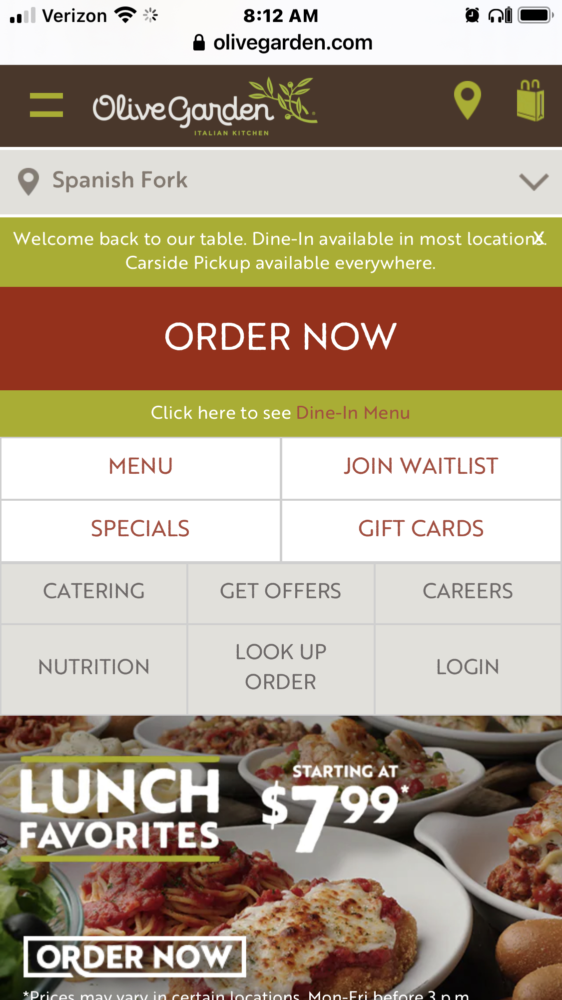
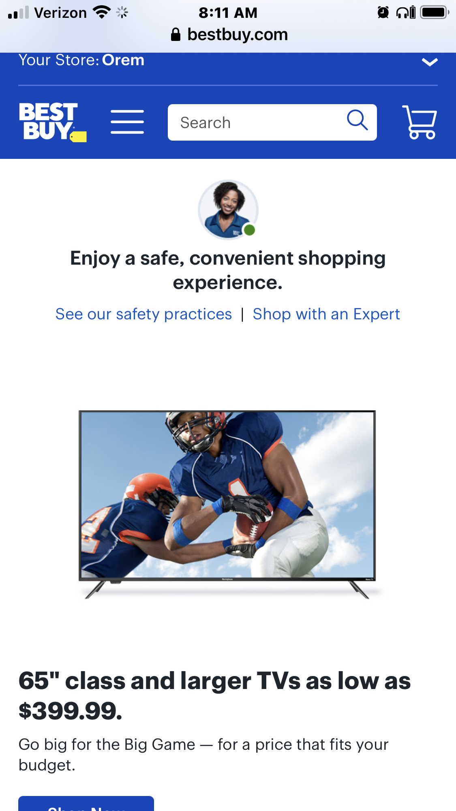
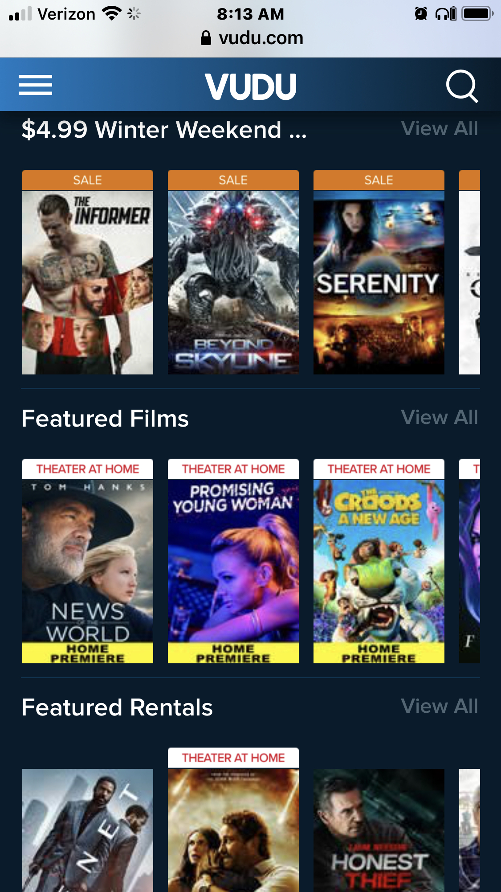

Design Principles Document
Alesha Anderson McCown
Visual Hierachy
The Olive Garden
What is the item that pops out first in the below image? Hopefully you said the “Order Now” button. The visual hierarchy on the page leads your eye first to this button, and propbably back again. To do that, they used red (the boldest color on the page) and a large font in all caps. This website is a good example of placing the most important item as the most prominent element and the quickest perception item to find.
White Space and Clean Design
Best Buy
Best Buy is a perfect example of White space and clean design. They are not alone in designing a clean and clutter free appearance on their webpages. Many big tech companies, such as Google, Facebook, and Amazon strive for this look. Perhaps it's because each website has so much information and it helps communicate more clearly. Best Buy uses clean and simple fonts, white backgrounds on their photos, and they keep plenty of white space between elements.
Proximity
Vudu
Alignment would no doubt be an important design principle in video and moving websites. Other similar websites also use alignment when displaying their products. On Vudu’s website, we have sale items, theater at home items grouped together, and several more categories of shows aligned together..